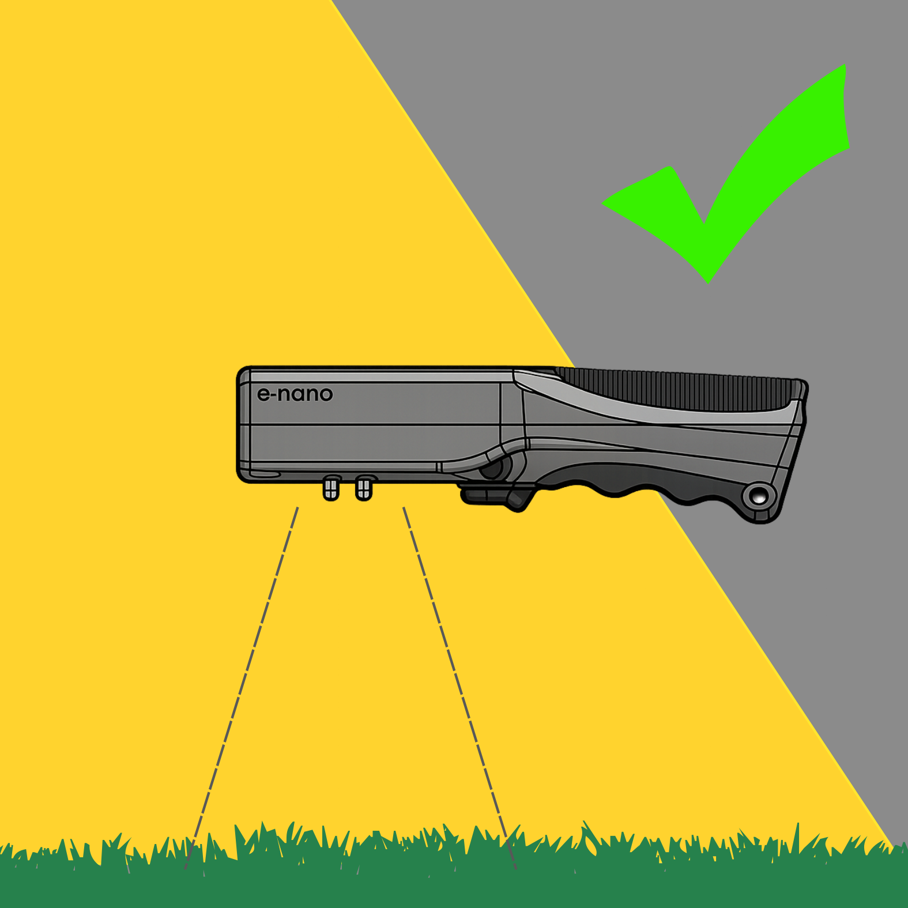
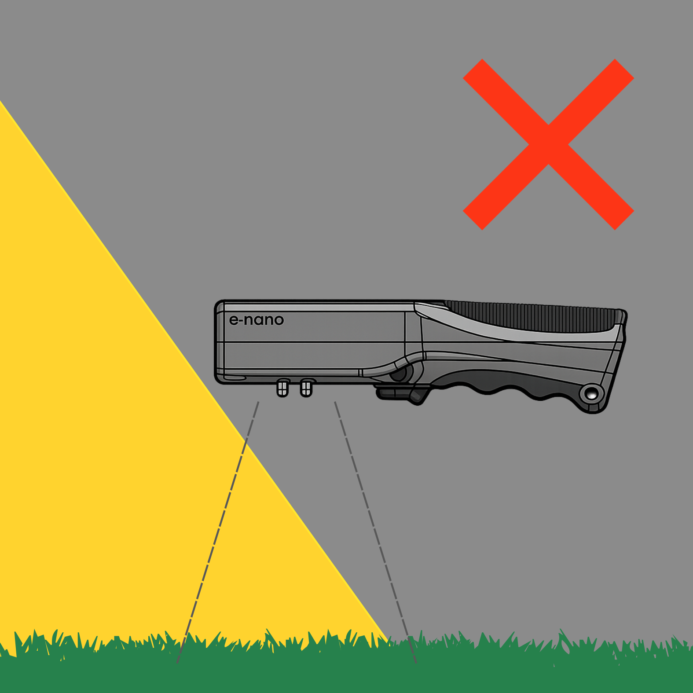
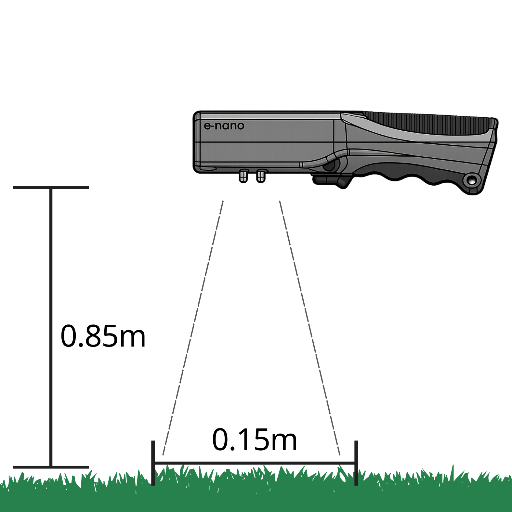

User Guide
Manti.S Quickstart Guide
Thank you for purchasing the MANTI-S portable NDVI sensor. Each Manti-S device is individually calibrated to produce standardised NDVI values.
Taking measurements
Using the device
- Hold the Manti.S over the area to be measured.
- Press the trigger until a value for NDVI is displayed.
- For best results, hold the device parallel to the ground when taking measurements.
- Use the device during daylight hours.
- Ensure that the white diffuser on the top of the device is clean of dirt and debris.
Taking measurements
Measurement Conditions



Things that affect your values
Differing sensor light conditions
The Manti.S uses a matched pair of sensors to calculate NDVI. This means the white diffuser on the top of the device must be in the same light conditions as the area being measured, otherwise values will be skewed.
Wet ground
Ratios of IR and red light from wet soil can inflate measurements.
Low light
When the device indicates "low light" it is sensing weak signals from the bottom sensor and measurements may be partially less accurate.